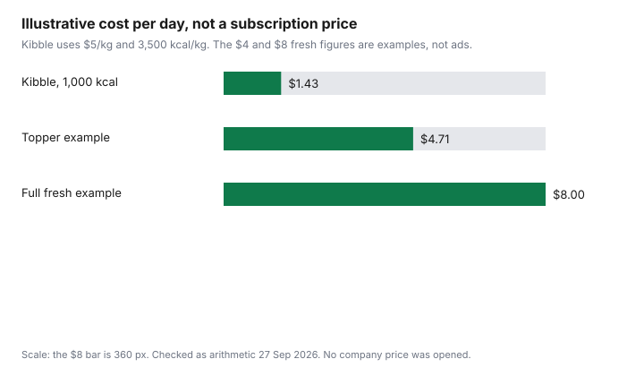

Pets · Canada
Fresh and Raw Dog Food Subscriptions in Canada: Cost per Day vs Kibble
A fresh-food ad is built to be compared with a bag price, which is the comparison that flatters the ad. The comparison that matches how you actually pay is cost per day: what you feed in 24 hours, times what that amount costs when the discount in the banner is gone. This page is that comparison for fresh and raw dog-food plans sold as subscriptions in Canada. It does not rank companies. No subscription menu was priced on a page that loaded for this guide, so no company dollar is printed. The chart is labelled arithmetic. Education only, and not veterinary advice.
Disclosure: Amazon.ca storefront categories and fresh or raw dog-food subscription types are offer types. Saving Optimizer may earn a commission if we later add a partner link. We do not currently claim a partnership with Amazon or with any fresh-food company. Education only. This is not veterinary advice. A storefront link does not change the arithmetic.
Key takeaways
- No Canadian fresh or raw subscription price was checked 27 Sep 2026. This page does not print one.
- Cost per day is (price per unit × units per day). A topper is that fresh line plus the kibble you still feed.
- An illustrative kibble row at $5 per kg and 3,500 kcal/kg is $1.43 a day at 1,000 kcal. An illustrative full-fresh day at $8 is not a company price.
- Public Health Agency of Canada does not recommend raw pet food or treats. Cooked kibble, canned food, and fresh cooked food are the safer examples on those pages.
- An intro discount is the first box until the terms say it continues. Read the renewal price before you compare it with kibble.
How fresh and raw subscriptions price: by weight, calories and plan
A subscription is a repeating order. The price drivers you can see, when a company page actually loads, are usually the dog’s weight, a calorie target, and a plan that is full feeding or a smaller add-on.
This guide does not have a Canadian checkout with those fields filled in. Treat any number in an ad as unconfirmed until you are on the page that will charge the card, with your postal code, your dog’s weight, and the plan name visible. Write down four things before you leave that page: the price of the next delivery, the weight or the calories in it, how many days it claims to cover, and whether that price is the intro price or the price after.
Fresh cooked food and raw food are not the same product, even when both arrive frozen. Health Canada’s “Raw pet food safety” page and the companion “Pet food safety” publication (published September 2024) put kibble, canned food, and fresh cooked food on the safer side of the choice, and they say the Public Health Agency of Canada does not recommend raw food or treats, including raw, freeze-dried, or dehydrated meat. A plan that says “fresh” still has to say whether it is cooked. Read that word. The cost-per-day guide is the same division for a bag you pick up in a store. A subscription does not get a different formula because it arrives on a schedule.
Cost-per-day formula vs kibble
Cost per day = price of the unit you buy, divided by the days that unit is supposed to last. If the company sells by the day already, the formula is finished only after you confirm the day-price is the renewal price, not the first box.
If you are comparing with kibble, run the kibble the same way. Price per kilogram is not enough when the foods are not equally dense. Cost per day = (price ÷ (kilograms × kilocalories per kilogram)) × daily kilocalories.
Labelled example, not a shelf price: kibble at $5.00 per kilogram and 3,500 kilocalories per kilogram, feeding 1,000 kilocalories, is 1,000 × 5 ÷ 3,500 = $1.43 a day. A full fresh plan in the same example is drawn at $8.00 for those 1,000 kilocalories, which is $8.00 a day, or $240 over a 30-day month (8 × 30). The gap versus the kibble example is $6.57 a day, or $197.10 over 30 days. Those fresh dollars were not copied from a company. They exist so the subtraction has a shape. Replace $8.00 with the renewal price divided by the days in the box. If the box does not say how many days or how many kilocalories, you cannot finish the line. The dog cost guide prints the OVMA 2025 adult food line at $1,418 a year. That average is not a fresh plan and not a kibble plan. It is the reason a daily gap of a few dollars is a budget line, not a rounding error.
Intro discounts vs regular pricing: read the fine print
The price in the ad is often the first delivery. The price that matters for a year is the price after that offer ends, plus any shipping that appears only at checkout.
This guide does not cite a terms page with a Canadian intro percent, so it does not print one. When you are on the page, write the intro price, the number of orders it covers, and the price the terms say comes next. A 50 percent first box, if you ever see that figure, is not a 50 percent year. One cheap box and eleven full-price boxes is a different average from twelve cheap boxes.
Skip or cancel rules belong in the same note. If you cannot skip the next delivery without a phone call inside a short window, the plan is less flexible than a bag you buy when the bin is low. The Subscribe and Save guide is that habit for Amazon.ca consumables. A fresh-food company is a different seller. Do not assume the Amazon skip button exists on their site. The pet food index guide is the backdrop: the category index was 185.2 in August 2026, which does not tell you whether this box is dear.
Topper plans: partial fresh for less
A topper plan feeds some fresh food and leaves the rest of the calories on the food you already use. The daily cost is the sum, not the fresh line alone.
In the labelled example, half of the 1,000 kilocalories stays on the $1.43 kibble, which is $0.71, and an illustrative $4.00 covers the other 500 kilocalories of fresh. The day is $4.71, not $4.00. People drop the kibble half and then decide the topper “only” costs the fresh sticker. It costs both, unless you actually reduce the kibble by the calories the topper replaces. If you pour the same cups and add the topper, you are buying extra calories, not a cheaper diet.
Ask the plan whether the topper is complete and balanced for the calories it replaces, or a mixer that assumes a complete food underneath. No AAFCO model statement is quoted here; check aafco.org. Read the statement on the package you receive. A statement is not, by itself, a Canadian statute, and it is not a price. The store-brand guide makes the same point about a calorie line that is missing. A topper without a calorie line cannot be subtracted from the kibble.
Safety and nutrition: AAFCO statements and raw handling
Nutrition questions belong with your veterinarian. What this page can repeat is handling, from pages that loaded.
The Public Health Agency of Canada does not recommend feeding pets raw food or treats. Raw pet food has not been cooked to temperatures that typically kill bacteria, and those pages name Salmonella and E. coli. If someone in the household still chooses raw, the same pages say to thaw it on the bottom shelf of the fridge in a sealed container, thaw only what you need, not refreeze leftovers, use separate dishes and utensils and wash them separately, pick up bowls when the dog is done, and not let the pet lick faces, mouths, or open wounds. Wash hands after feeding and after handling waste. Adults over 65, pregnant people, children 5 and under, and people with weakened immune systems should not handle raw pet food. Safer examples named on the pages are kibble, canned food, and fresh cooked food. Talk to your vet about what to feed. That instruction is on the page. It is not a slogan added here.
A fresh cooked subscription is not given a pass by those sentences, and it is not condemned by them either. The pages put fresh cooked food with the safer examples and raw, freeze-dried, and dehydrated meat with the foods they do not recommend. Read the plan. Freeze-dried toppers are named with the raw group on the pet-food-and-treats page, which also says that without a step that kills pathogens, raw products may carry a higher risk, and that animals fed raw meat are more likely to shed germs in feces than animals fed only kibble or cooked food, even when the animal looks well. The vet-bill guide is the estimate habit if a diet experiment becomes a visit. The cat cost guide is the parallel sheet if the subscription is for a cat. This page’s arithmetic example is a dog day. Do not reuse $1.43 as a cat.
Worksheet
Fill a row only from a page that will charge you, or from a bag you can weigh. Leave the fresh cells blank until then. The illustrative row is the example above, marked so it cannot be mistaken for a Canadian offer.
| Row | What you pay | What that amount covers | Cost per day |
|---|---|---|---|
| Illustrative kibble | $5.00 per kg, 3,500 kcal/kg | 1,000 kcal | $1.43 |
| Illustrative topper | $0.71 of that kibble (500 kcal) plus $4.00 fresh | 1,000 kcal total | $4.71 |
| Illustrative full fresh | $8.00, labelled example | 1,000 kcal | $8.00 |
| Your kibble, renewal price | |||
| Your plan, price after the intro |

Sources & date stamps
- Health Canada, Raw pet food safety, and Pet food safety (published September 2024, catalogue HP40-370/2024E-PDF). Public Health Agency of Canada does not recommend raw pet food or treats. Handling steps and higher-risk groups as printed. Checked 27 Sep 2026.
- Public Health Agency of Canada, Pet food and treats. Raw, freeze-dried, and dehydrated products; shedding in feces; separate dishes. Checked 27 Sep 2026.
- Ontario Veterinary Medical Association, 2025 canine cost-of-care PDF, checked 27 Sep 2026. Adult dog food $1,418. Not a subscription price.
- Check aafco.org for the model statement. No model adequacy statement is quoted. No fresh or raw company checkout price is listed here.
Frequently asked questions
How much does fresh dog food cost per day?
No Canadian subscription price was checked 27 Sep 2026, so this page does not print a market rate. Cost per day is the renewal price of a delivery divided by the days that delivery covers, after you confirm the calories. An illustrative full-fresh day of $8.00, against an illustrative kibble day of $1.43, is arithmetic so the worksheet has a shape. Replace both numbers with the plan and the bag in front of you.
Is raw food cheaper than fresh?
Not from any published price. Raw and fresh cooked are different products, and a lower sticker was not found to compare them. Public-health pages do not recommend raw food or treats, including freeze-dried and dehydrated meat, because of bacteria such as Salmonella and E. coli, and a cheaper raw box, if you later find one, is still that handling problem. Compare renewal cost per day only after you have read whether the plan is cooked.
Are fresh food subscriptions worth it?
Worth is the renewal cost per day minus the kibble cost per day, for calories you actually feed, plus whether you will keep the plan after the intro price ends, and this page cannot answer that with a company dollar because no source cited here lists one. A topper is worth less than the ad if you forget to count the kibble underneath. Ask your veterinarian before you change what the dog eats. This is not a ranking of plans.
What is a topper plan?
A topper plan is a partial fresh portion added to, or substituted for part of, the food you already feed, so the daily cost is the fresh amount plus the kibble you still pour. In the labelled example, 500 kilocalories of the $1.43 kibble is $0.71, and an illustrative $4.00 of fresh makes the day $4.71. If you do not reduce the kibble, you are adding calories, not swapping them. Read whether the topper is a complete food for the calories it replaces.
Is raw food safe?
Public Health Agency of Canada does not recommend feeding raw pet food or treats, and those pages say raw food can carry Salmonella and E. coli and that even a healthy pet can shed germs. If you still use it, follow the handling steps on the Health Canada page: thaw in the fridge, separate dishes, no face licking, and handwashing, and adults over 65, pregnant people, children 5 and under, and people with weakened immune systems should not handle it. Talk to your veterinarian. This page is not veterinary advice.
Researched and drafted with AI assistance and fact-checked against official Canadian sources. How we create content.